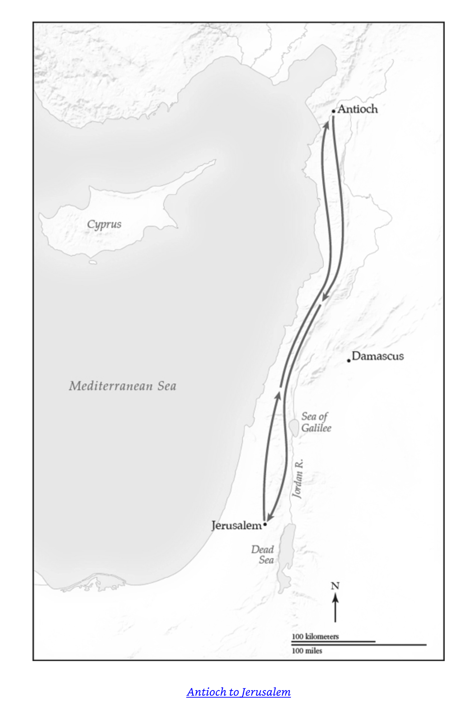

A crisis of belonging
One family in the Messiah.
Paul’s vision of shared life across an old boundary
The geography of the conflict

The setting
Circumcision and Torah observance expressed covenant loyalty under Roman rule. The city remained the movement’s symbolic center.
Jewish and Gentile believers shared life in a diverse international city where meals made belonging visible.
Gentile converts had abandoned pagan worship, but some teachers pressed them toward circumcision and Jewish identity.
Paul’s mission challenged familiar boundaries of religious identity. Understanding the fears behind the conflict matters.
The people
Respected leaders still need discernment and accountability.
Galatians 2:11–14
Peter eats with Gentile believers.
Barnabas and other Jewish believers participate.
One community becomes visible.
Visitors arrive from Jerusalem.
Peter withdraws.
Gentiles are made to feel like outsiders.
Our behavior can deny the welcome our words proclaim.
The argument spreads
Teachers insisted that Gentile believers needed circumcision.
They questioned Paul’s authority and the completeness of his message.
Paul wrote Galatians to defend his mission and the believers’ standing.
Justification, in this argument, concerns recognition as members of God’s family—not an extra barrier around belonging.
Paul’s theology
Through death and resurrection, Jesus reshapes how Paul understands the people of God.
Acts 15:1–21
Faithful discernment requires listening, testimony, Scripture, and willingness to recognize God’s work beyond familiar expectations.
The decision
The decision protects full Gentile membership while asking for conduct that makes shared fellowship possible.
Christian freedom is not isolation from responsibility. It is freedom practiced with concern for God and for neighbors.
After the meeting
Gentile membership is affirmed without circumcision.
Jerusalem publicly affirms the work of Paul and Barnabas.
A letter and trusted messengers carry the decision to Antioch.
The Antioch believers receive the message with joy—but a formal agreement begins a process of living differently.
Living as one family today
Welcome — make full participation possible.
Integrity — let conduct reflect professed faith.
Courage — resist pressure that produces exclusion.
Humility and love — receive correction and use freedom for others.
Based on the supplied extracted text and Antioch and Jerusalem: One Family in the Messiah; see Galatians 2 and Acts 15.